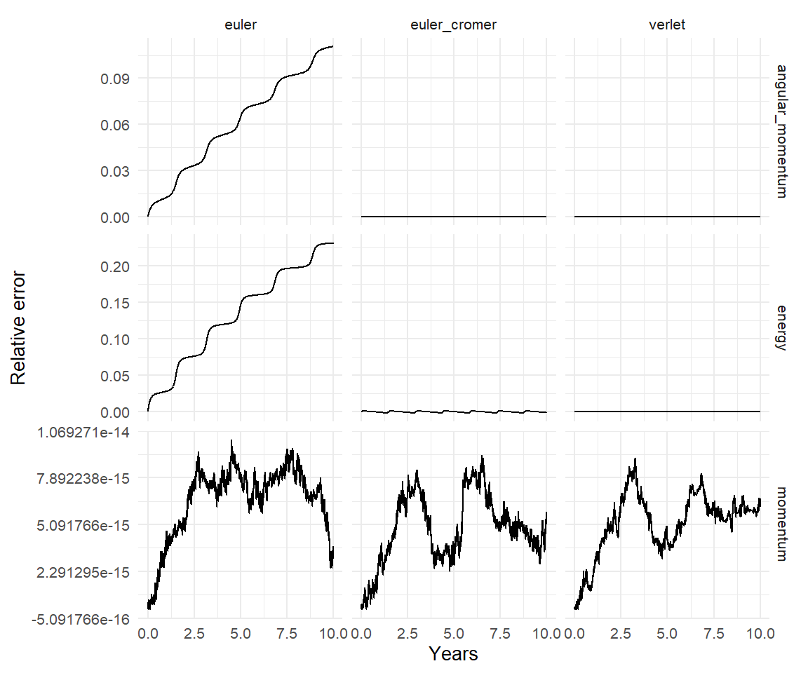
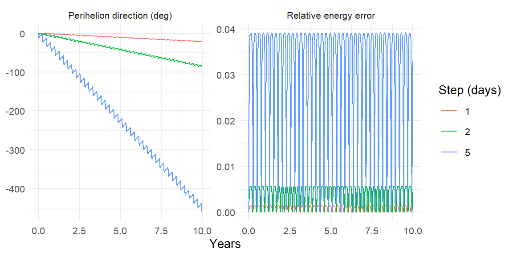

sim |>
group_by(time) |>
summarise(px = sum(mass * vx), py = sum(mass * vy), pz = sum(mass * vz))
sim |>
group_by(time) |>
summarise(Lx = sum(mass * (y * vz - z * vy)),
Ly = sum(mass * (z * vx - x * vz)),
Lz = sum(mass * (x * vy - y * vx)))12 Conservation Laws as Diagnostics
A simulation can be wrong in ways that are invisible in a plot. An orbit that is an ellipse of the right size, traced at the right speed, can still be rotating slowly in its plane for no physical reason, and nothing about the picture will tell you. What will tell you is a set of quantities that the real system keeps constant and the simulated one may not. Chapter 5 used total energy this way; this chapter adds total momentum and total angular momentum, derives why all three are conserved for any number of bodies, explains which of them a good integrator conserves exactly and which only approximately, and turns them into a single function you can run on any simulation output. It ends with a worked diagnosis of a simulation that passes the energy test and is still wrong.
12.1 Three conserved quantities, for \(N\) bodies
Chapter 4 derived conservation of energy and angular momentum for two bodies. The \(N\)-body versions follow from two properties of gravity: it is pairwise antisymmetric (\(\mathbf{F}_{jk} = -\mathbf{F}_{kj}\)) and central (\(\mathbf{F}_{jk}\) lies along \(\mathbf{r}_k - \mathbf{r}_j\)).
Momentum. \(\mathbf{P} = \sum_j m_j\mathbf{v}_j\), and
\[ \dot{\mathbf{P}} = \sum_j m_j\mathbf{a}_j = \sum_j\sum_{k\ne j}\mathbf{F}_{jk} = \sum_{j<k}\left(\mathbf{F}_{jk} + \mathbf{F}_{kj}\right) = \mathbf{0}. \]
Every force appears twice with opposite signs. The center of mass moves in a straight line at constant velocity, which is Chapter 2’s drifting Earth.
Angular momentum. \(\mathbf{L} = \sum_j m_j\,\mathbf{r}_j\times\mathbf{v}_j\), and since \(\mathbf{v}_j\times\mathbf{v}_j = 0\),
\[ \dot{\mathbf{L}} = \sum_j \mathbf{r}_j\times m_j\mathbf{a}_j = \sum_{j<k}\left(\mathbf{r}_j\times\mathbf{F}_{jk} + \mathbf{r}_k\times\mathbf{F}_{kj}\right) = \sum_{j<k}\left(\mathbf{r}_j - \mathbf{r}_k\right)\times\mathbf{F}_{jk} = \mathbf{0}, \]
because \(\mathbf{F}_{jk}\) is parallel to \(\mathbf{r}_j - \mathbf{r}_k\). Antisymmetry collapses the two terms of each pair into one; centrality kills it.
Energy. \(E = \sum_j \tfrac12 m_j v_j^2 - \sum_{j<k} G m_j m_k/r_{jk}\) (Equation 5.10). The kinetic term’s rate of change is \(\sum_j m_j\mathbf{v}_j\cdot\mathbf{a}_j = \sum_{j<k}\mathbf{F}_{jk}\cdot(\mathbf{v}_j - \mathbf{v}_k)\), again by antisymmetry. With \(\mathbf{F}_{jk} = G m_j m_k(\mathbf{r}_k - \mathbf{r}_j)/r_{jk}^3\) and the identity \((\mathbf{r}_k - \mathbf{r}_j)\cdot(\mathbf{v}_k - \mathbf{v}_j) = r_{jk}\dot r_{jk}\) from Chapter 4,
\[ \mathbf{F}_{jk}\cdot(\mathbf{v}_j - \mathbf{v}_k) = -\frac{G m_j m_k\,\dot r_{jk}}{r_{jk}^2}, \]
and the potential term’s rate of change is \(\sum_{j<k} G m_j m_k\,\dot r_{jk}/r_{jk}^2\), which cancels it pair by pair. With softening (Chapter 6), replace \(r_{jk}\) by \(\sqrt{r_{jk}^2+\varepsilon^2}\) in the potential and the same cancellation goes through.
12.2 Which laws an integrator keeps exactly
Look at the integrators of Chapter 5 as compositions of kicks (velocity updates from accelerations computed at fixed positions) and drifts (position updates at fixed velocities).
A kick changes \(\mathbf{P}\) by \(\Delta t\sum_j m_j\mathbf{a}_j = \Delta t\sum_j\mathbf{F}_j = \mathbf{0}\) and \(\mathbf{L}\) by \(\Delta t\sum_j\mathbf{r}_j\times m_j\mathbf{a}_j = \mathbf{0}\), by the same pairwise arguments as above, exactly, for any \(\Delta t\). A drift changes neither: \(\mathbf{P}\) does not involve positions, and \(\mathbf{L}\) changes by \(\Delta t\sum_j m_j\mathbf{v}_j\times\mathbf{v}_j = \mathbf{0}\). So any method that is a sequence of kicks and drifts, which is Euler-Cromer (kick, drift) and Velocity Verlet (half kick, drift, half kick), conserves momentum and angular momentum to machine precision no matter how large the step.
Plain Euler is not a kick followed by a drift; it updates positions with the old velocities and velocities with the old accelerations simultaneously. Momentum still survives, but angular momentum picks up \(\Delta t^2\sum_j m_j\mathbf{v}_j\times\mathbf{a}_j\) per step, which does not vanish. So the three laws grade the three methods differently:
| Euler | Euler-Cromer | Verlet | |
|---|---|---|---|
| Momentum | exact | exact | exact |
| Angular momentum | \(O(\Delta t)\) drift | exact | exact |
| Energy | \(O(\Delta t)\) drift | bounded, \(O(\Delta t)\) | bounded, \(O(\Delta t^2)\) |
The table is the key to reading diagnostics. A momentum or angular momentum error that grows past rounding in a Verlet run is not a time-step problem; it is a bug, in your setup or in the code. An energy error is a time-step problem (or an integrator problem), and its shape says which.
12.3 Computing all three
The package has one function per quantity, and each is a single grouped sum over the output tibble. Chapter 5 wrote out the energy; momentum and angular momentum are shorter still, and this is all get_momentum() and get_angular_momentum() do:
conserved_quantities() joins the three into one tidy time series and adds the relative errors. For energy that is \((E - E_0)/|E_0|\) as before. Momentum is often exactly zero at the start, so its error is measured against the total \(\sum_j m_j|\mathbf{v}_j|\) at \(t = 0\) instead; angular momentum against \(|\mathbf{L}_0|\). On Chapter 5’s star and planet with the three methods:
star_planet <- create_system() |>
add_body("Star", mass = 1e30) |>
add_body("Planet", mass = 1e24, x = 1e11, vy = 30000)
runs <- bind_rows(lapply(c("verlet", "euler_cromer", "euler"), function(m) {
star_planet |>
simulate_system(time_step = seconds_per_hour * 6,
duration = seconds_per_year * 10, method = m) |>
conserved_quantities() |>
mutate(method = m)
}))runs |>
select(time, method, energy_error, momentum_error, angular_momentum_error) |>
tidyr::pivot_longer(c(energy_error, momentum_error, angular_momentum_error),
names_to = "quantity", values_to = "error") |>
mutate(quantity = sub("_error$", "", quantity)) |>
ggplot(aes(time / seconds_per_year, error)) +
geom_line() +
facet_grid(quantity ~ method, scales = "free_y") +
labs(x = "Years", y = "Relative error")
Every panel in the table above has its picture here. The momentum row is noise at the \(10^{-16}\) level for all three methods. The angular momentum row is noise for Verlet and Euler-Cromer and a steady climb for Euler. The energy row is Chapter 5’s figure again.
12.4 Reading the plots
Four shapes cover nearly everything you will see in an energy diagnostic.
A narrow band, oscillating with the orbit. Healthy. The band’s width is the integrator’s \(O(\Delta t^2)\) error and halving the step should shrink it by four. Nothing to do.
A wide band, still oscillating. The step is too large for the tightest or most eccentric orbit in the system. The run is probably not catastrophically wrong, but the next section shows that “bounded energy error” is a weaker guarantee than it sounds. Halve the step and compare.
A steady drift. Either the wrong integrator (Euler), or a step so large that the symplectic integrator’s shadow-Hamiltonian guarantee has broken down, which happens when \(\Delta t\) approaches the periapsis timescale of some orbit (Chapter 13). Check method, then halve the step.
A sudden jump. A close encounter. Two bodies passed each other faster than the step could follow and the integrator handed one of them a spurious kick (Chapter 6). Everything after the jump is on a different orbit from everything before. Either the encounter needs a smaller step (Chapter 13’s segmented runs) or it is a collision in disguise and the simulation should not continue past it.
A fifth shape is an apparent drift that is not real: you ran with softening and computed the energy without it. The softened force conserves the softened energy; conserved_quantities() reads the softening length from the run, so this only bites if you compute the energy by hand or override the argument.
12.5 A worked diagnosis: the orbit that looked fine
Mercury’s perihelion precesses by 574 arcseconds per century, of which 531 come from the other planets and 43 from general relativity. Suppose you wanted to measure the planetary part with orbitr. The first question is what the integrator does to Mercury’s perihelion when there are no other planets, where the correct answer is zero precession. Two bodies, ten years, with daily and five-day steps:
mercury_run <- function(step_days) {
create_system() |>
add_sun() |>
add_planet("Mercury", parent = "Sun") |>
simulate_system(time_step = seconds_per_day * step_days,
duration = seconds_per_year * 10)
}
perihelion_angle <- function(sim) {
# longitude of perihelion = node + argument of perihelion, unwrapped so it
# can be tracked through 360 degrees
get_orbital_elements(sim, "Mercury", "Sun") |>
mutate(omega_deg = unwrap((lan + arg_pe) * pi / 180) * 180 / pi) |>
select(time, omega_deg)
}
runs_m <- bind_rows(lapply(c(5, 2, 1), function(s) {
sim <- mercury_run(s)
perihelion_angle(sim) |>
mutate(step_days = s,
energy_error = conserved_quantities(sim)$energy_error)
}))(The longitude of perihelion, \(\Omega + \omega\), is the quantity to track rather than \(\omega\) alone, because for Mercury’s small inclination the node is poorly defined and the two angles can trade against each other while their sum stays put.)
bind_rows(
runs_m |> group_by(step_days) |>
transmute(time, panel = "Perihelion direction (deg)",
value = omega_deg - first(omega_deg)),
runs_m |> group_by(step_days) |>
transmute(time, panel = "Relative energy error", value = energy_error)
) |>
ungroup() |>
ggplot(aes(time / seconds_per_year, value, color = factor(step_days))) +
geom_line() +
facet_wrap(~ panel, scales = "free_y") +
labs(x = "Years", y = NULL, color = "Step (days)")
The energy error is bounded at every step size, exactly as advertised. And the perihelion of the five-day run rotates through tens of degrees in a decade, for no physical reason at all. The daily run rotates too, more slowly. This is numerical precession: the integrator’s shadow Hamiltonian is not Kepler’s, and the difference, though it conserves energy, does not conserve the eccentricity vector. It is the single most common artifact in orbital simulation, and the energy test is blind to it.
Measure the rate at each step:
rates <- runs_m |>
group_by(step_days) |>
summarise(deg_per_year = coef(lm(omega_deg ~ I(time / seconds_per_year)))[[2]])
rates
#> # A tibble: 3 × 2
#> step_days deg_per_year
#> <dbl> <dbl>
#> 1 1 -2.18
#> 2 2 -8.49
#> 3 5 -45.1Halving the step cuts the rate by about four: the artifact is \(O(\Delta t^2)\), like everything else about Verlet. That scaling is also the cure, because it lets you extrapolate. The real planetary precession is \(531''\) per century, or \(0.0015°\) per year. To get the artifact ten times smaller than the signal you would need a step of about
rate_1d <- rates$deg_per_year[rates$step_days == 1]
target <- 0.0015 / 10
sqrt(target / abs(rate_1d)) * 24 # hours
#> [1] 0.1992759hours. That is a smaller step than anyone would guess from looking at the orbit, and it is what Chapter 8’s last exercise was getting at when it asked what limits the precision. The general lesson is worth stating plainly: an energy diagnostic tells you the integrator is stable. It does not tell you the integrator is accurate. For accuracy, find a quantity the true dynamics conserves that the integrator does not, the eccentricity vector is the usual one, and watch that.